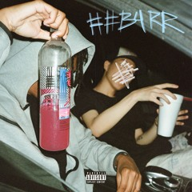
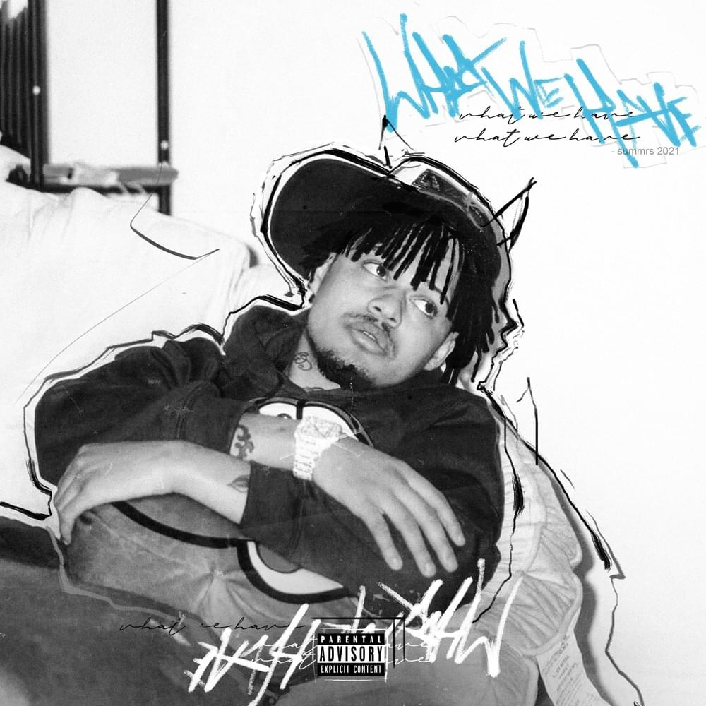
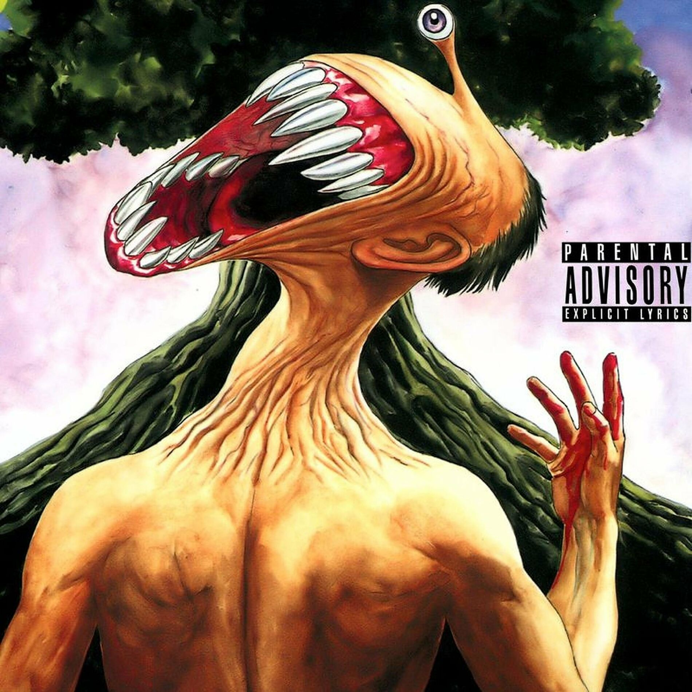
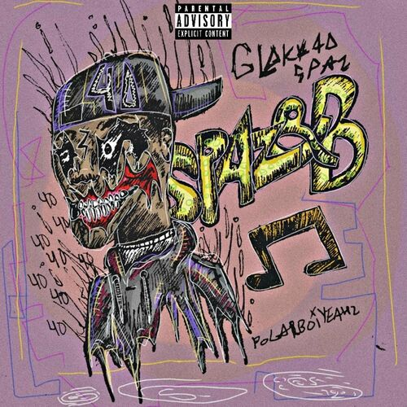

Le pluggnb est un sous-genre musical fusionnant des éléments de trap, de R&B et de musiques électroniques atmosphériques.
Ce style s’est développé principalement sur des plateformes comme SoundCloud, où de jeunes artistes indépendants ont commencé à expérimenter avec des sonorités plus
douces et émotionnelles que celles du trap traditionnel.
Pionniers du genre, des rappeurs comme Summrs, Autumn!, et d'autres membres du collectif Slayworld ont joué un rôle central dans la popularisation du pluggnb,
en apportant un son distinctif mêlant mélodies rêveuses, rythmes minimalistes et paroles souvent introspectives.
L’esthétique du pluggnb se caractérise par une production souvent lo-fi, où des beats simplifiés et des basses profondes servent de toile de fond à des voix autotunées.
Ces éléments créent une atmosphère à la fois mélancolique et aérienne, évoquant des émotions complexes comme la tristesse, l'amour, la nostalgie et l'isolement.
Contrairement au trap classique, qui est souvent agressif et centré sur la bravade, le pluggnb met l'accent sur les sentiments personnels et la vulnérabilité.
Les mélodies y occupent une place primordiale, contribuant à un son plus fluide et introspectif.
Ce mouvement musical a touché un large public, en particulier parmi la jeunesse qui se reconnaît dans l'authenticité et la sincérité des artistes.
Le pluggnb a évolué pour devenir plus qu’un simple genre musical ; il est devenu un véritable phénomène culturel dans l’underground,
avec une influence palpable sur de nombreux autres styles de rap. En combinant la sensibilité du R&B moderne avec la structure de la trap,
les artistes pluggnb ont réussi à créer un son qui transcende les genres et capte l’essence des émotions humaines à l'ère numérique.
Aujourd'hui, ce sous-genre continue de croître, influençant de plus en plus de jeunes talents tout en gagnant en popularité au sein de la culture musicale
contemporaine.
>